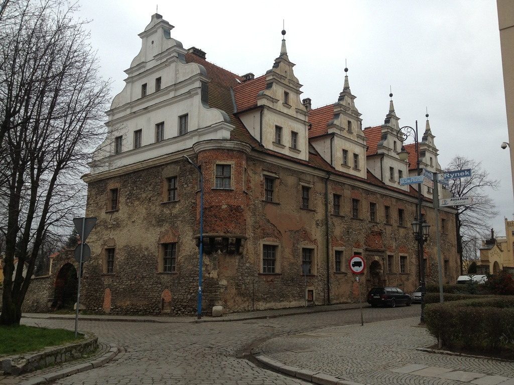

Poka¿ na mapie

Dom Ksi±¿±t Brzeskich
Dawny Dom Ksi±¿êcy zbudowany w stylu renesansowym na prze³omie XVI i XVIIw.
(ukoñczenie budowy - 1606r.) z inicjatywy ksiêcia brzesko-legnickiego Joachima Fryderyka .
Rezydencj± piastowsk± by³ do 1675r. kiedy zmar³ Jerzy IV Wilhelm - ostatni potomek
z linii Piastów ¦l±skich. Pó¼niej dwór sta³ siê w³asnooeci± Austrii, a od XVIIIw.
(w wyniku wojen ¶l±skich) Prus. Znajdowa³a siê tutaj siedziba poborcy podatkowego,
a w latach 1826 - 1945 S±du Okrêgowego i Miejskiego. W wyniku dzia³añ wojennych
w 1945r. obiekt w czê¶ci dachowej zosta³ zniszczony przez ogieñ. Dopiero
w latach osiemdziesi±tych przeprowadzono gruntowny remont. Budynek w swojej historii
by³ wielokrotnie remontowany. Posiada dwuspadowy dach i obszerne piwnice
ze sklepieniami kolebkowymi i krzy¿owymi. Do najstarszych elementów architektonicznych
budowli nale¿y portal g³ównego wej¶cia, kamienne obramowania okien oraz (na rogu)
wykusz w kszta³cie pó³kola podparty kamiennymi wspornikami.